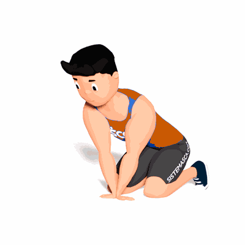

Alongamento Dinâmico Rotação do Punho

Exercício de mobilidade dos músculos do punho, auxiliando nas atividades físicas e atividades do dia a dia.
Ficha Técnica
Tipo: Mobilidade
Grupo Muscular: Antebraço
Aparelho: Nenhum
Músculos: Nenhum
Como realizar
- Fique em posição de 4 apoios;
- Gire o pulso direito até os dedos ficarem apontando para a direita e faça o mesmo com o pulso esquerdo para que os dedos apontem para esquerda;
- Mantenha os punhos encostados um no outro;
- Com as mãos fixas no solo, inicie o movimento de rotação do corpo alternando entre horário e anti-horário;
- Continue o movimento pelo tempo prescrito pelo professor(a).
 RC STORE
RC STORE